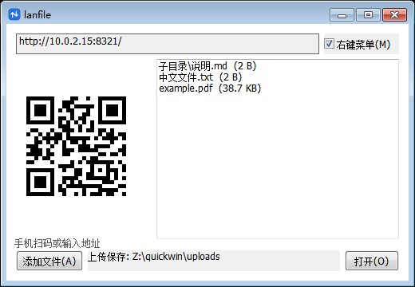
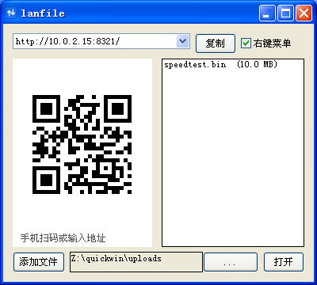
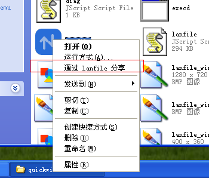

← 全部示例
lanfile（局域网文件互传）
给 XP / Win7 老机器装一个「扫码收发」：电脑开服务，手机浏览器扫码上传，
零安装、不依赖网盘、不出外网。

Windows 7

Windows XP

右键菜单：通过 lanfile 分享
1.3 MB · 单文件 · 免安装
· Windows XP+ (32 / 64 位)
· 已在 XP / Windows 7 验证
下载 lanfile.exe
用法
- 收：手机上打开窗口里的地址（或扫左侧二维码），选文件点上传，
文件存到 exe 同级的
uploads\。
- 发：点「添加文件」挑文件或文件夹，手机页在「从电脑接收」里点开链接下载。
- 右键共享：资源管理器里右键文件或文件夹 →
通过 lanfile 分享，等效于上面的「添加文件」。窗口里的
☑右键菜单 可随时开关这项。
行为细节
- 单实例：重复启动只把新路径转发给已有窗口（
WM_COPYDATA），
资源管理器右键多个文件时会自动收敛成一次添加。
- 端口：固定
8321；被占用时自动改用随机端口，
地址栏会提示「默认端口被占，已改用随机端口」。
- 路径安全：上传名做 basename 归一化并拒绝绝对路径与
..，
越出 uploads\ 的请求返回 400。
- 无托盘：关窗即退出，不常驻后台。
- 防火墙：启动时检测 Windows 防火墙状态；开着但还没有本程序的入站规则时，
提示一键放行（UAC 确认后自动添加，可随时在「允许应用通过防火墙」里删除）。
Windows XP 没有这个接口，只能跳过。
- 配置：只存一个开关（右键菜单），写在
%TEMP%\lanfile.json。
技术
- 原生 Win32 控件（EDIT / LISTBOX / BUTTON / AUTOCHECKBOX）+ 自绘 QR 面板，
不用第三方 UI 框架。
- 二维码用 lean-qr 生成位图，
toImageData 显式指定黑白值后一次性 BitBlt 贴图
— 省略色值会拿到透明黑，GDI 忽略 alpha 导致整块黑块。
- HTTP 服务端 / 客户端全部走 quickwin 自带 lib（polyfill fetch、URL、TextEncoder），
不引入外部包。
安全提示：局域网内任何能访问该端口的人都能上传和下载，
代码未实现鉴权 / 限速 / 文件类型过滤。请只在可信网络里用。